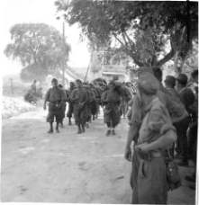
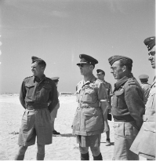
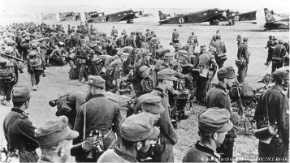

Ενώ η Ελλάδα αντιστάθηκε περίφημα στην ιταλική εισβολή την Ημέρα των Οξίων κατά τη διάρκεια του Β ' Παγκοσμίου Πολέμου, η τελική εμπλοκή και η επακόλουθη βία που αντιμετώπισε η Κεφαλονιά άφησαν ένα σημαντικό σημάδι στο νησί. Το πιο σημαντικό από αυτά τα γεγονότα ήταν η Σφαγή της Μεραρχίας Acqui, γνωστή και ως Σφαγή της Κεφαλονιάς, η οποία έλαβε χώρα τον Σεπτέμβριο του 1943. Η σφαγή είχε ως αποτέλεσμα μαζικό μακελειό και απώλειες για τον ιταλικό στρατό, ο οποίος είχε πρόσφατα εισέλθει σε ανακωχή με τους Συμμάχους. Οι γερμανικές δυνάμεις κατοχής διέπραξαν εγκλήματα πολέμου εναντίον των Ιταλών, οι οποίοι είχαν ήδη παραδοθεί.
World War II
1941
Ιστορία
Timeline
Β' Παγκόσμιος Πόλεμος
While Greece famously resisted Italian invasion on Oxi Day during World War II, the eventual involvement and subsequent violence that Kefalonia faced left a major mark on the island. The most significant of these events was the Massacre of the Acqui Division, otherwise known as the Kefalonia Massacre, which took place in September 1943. The massacre resulted in mass carnage and loss for the Italian military, who had recently entered an armistice with the Allies. The German occupying forces committed war crimes against the Italians, who had already surrendered.
[1] Ιταλοί στρατιώτες αιχμάλωτοι των Γερμανών, Σεπτέμβριος 1943. Italian soldiers taken prisoner by the Germans, September 1943.
[3] αξιωματικούς της Βασιλικής Πολεμικής Αεροπορίας επισκέπτονται ελληνικό σταθμό μαχητικών αεροσκαφών. King George of the Hellenes with senior Royal Air Force officers visiting a Greek fighter station.
[2] Τα στρατεύματα της Βέρμαχτ ετοιμάζονται να εισβάλουν στην Κρήτη. Wehrmacht troops prepare to invade Crete.



[1] https://www.ww2wrecks.com/portfolio/1943-the-massacre-of-theitalian-acqui-division/ [2] https://www.dw.com/en/kefalonia-massacre-revisiting-a-nazi-warcrime-in-greece/a-45602579 [3] Royal Air Force official photographer – This is photograph CM 2758 from the collections of the Imperial War Museums.